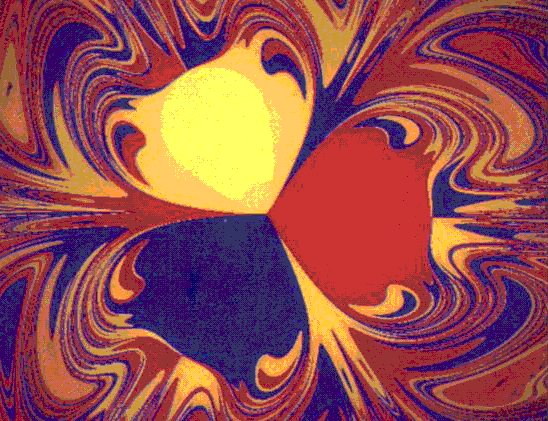

| Arrange three magnets on the vertices of an equilateral on a horizontal surface. |
| Paint one magnet red, one yellow, and one blue. |
| Suspend a magnetic pendulum above the magnets. Orient the pendulum so it attracts the fixed magnets. |
| Wherever the pendulum is released, it will eventually come to rest over one of the three magnets. Paint the starting point with the color of the magnet over which the pendulum eventually comes to rest. |
| The collection of all starting points that come to rest over a given magnet is called the basin of attraction of that magnet. |
| This is only a demonstration of the principle. Painting more than just a few starting points this way would be daunting. |
Here is an example of a plot of the basins of atraction.
Magnifying any portion of the boundary reveals the Wada property: any point on the boundary between two regions is also on the boundary of the third. With some care, the Wada property can be deomonstrated using this set-up.
Note these basins of attraction have fractal boundaries.
|  |
| The basins of attraction of three magnets |
The videotape Fractals: an Animated Discussion by H-O Peitgen contains an instructive animation of this problem.
Return to Pendulum Fractal Basin Boundary